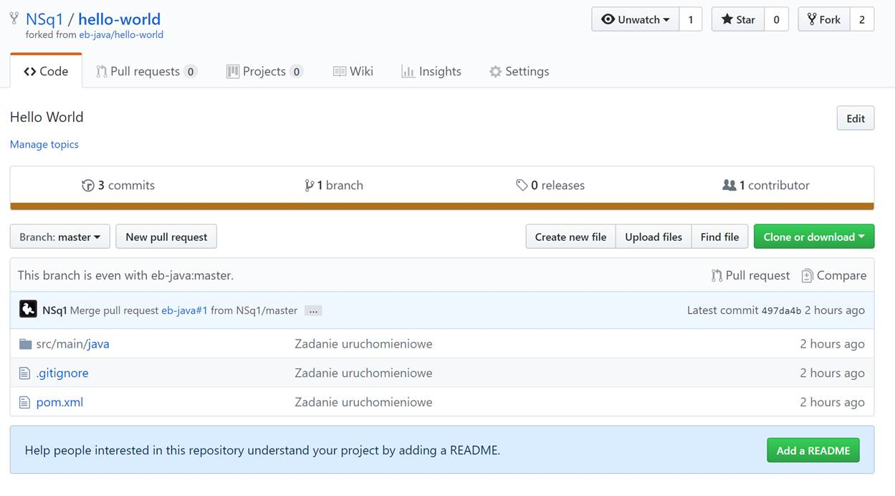

Słowem wstępu
Na szkolenie będą składały się następujące elementy:
- Dokument tekstowy zawierający
- materiały o charakterze informacyjnym (np. instrukcja konfiguracji stacji roboczej)
- odnośniki do materiałów zewnętrznych (np. tutorial internetowy)
- treści zadań do realizacji/odnośniki do repozytoriów git zawierających materiały
- Konsultacje
- w formie tekstowej (indywidualne i grupowe) przy pomocy komunikatora Discord, głównie w godzinach wieczornych.
- "osobiste" w godzinach pracy, preferowanie przed spotkaniami projektowymi umawiane ad hoc
- Spotkanie grupowe
- około 2h raz na 2 tygodnie
- termin będzie ustalany podczas poprzedniego spotkania za wyjątkiem pierwszego, którego termin zostanie podany na Discord.
Podczas szkolenia wielokrotnie będzie przewijał się tekst "NSq1" (często w towarzystwie obrazka wiewiórki). Jest to nazwa mojego konta użytkownika i w większości przykładowych komend/wycinkach ekranu powinien on być zastąpiony przez prywatną nazwę kont utworzonych w paragrafie 2.
Założenie kont oraz instalacja wymaganych aplikacji
-
Discord (+ konto)
- Klikamy/otwieramy link na wybranym urządzeniu: skontaktuj się ze mną
- Instalujemy oprogramowanie dla urządzenia/używamy wewnątrz przeglądarki.
- Zakładamy konto/logujemy się i witamy z resztą na grupie eb-java
-
GitHub
Założyć konto i następnie umieścić jego nazwę lub adres email na który zostało założone na kanale discord „start”. Przed rozpoczęciem zadania drugiego będę musiał dodać wskazane konto do grupy na GitHub.
-
Java SDK + JRE 1.8
Java SE Development Kit 8 Downloads

Akceptujemy licencje i pobieramy odpowiednią javę (preferujemy x64 jeśli mamy windows 64 bitowy). Instalator po zainstalowaniu SDK powinien zaproponować instalację JRE, na którą również wyrażamy zgodę.
-
Git
Pobieramy oraz instalujemy Download for Windows
-
Opcjonalnie: Google translate w Chrome
Większość materiałów dodatkowych (stron WWW) będzie anglojęzyczna, współpracę może ułatwić wtyczka do chrome umożliwiająca szybkie przetłumaczenie fragmentu/strony. Proszę jedynie mieć na uwadze, że strony mogą (i pewnie często będą) zawierać kod/komendy w postaci tekstu, a nie obrazka i one również zostaną przetłumaczone razem z resztą strony i w związku z tym będą błędne.
 Po instalacji klikamy prawym na wtyczkę, wybieramy opcje i zmieniamy język tłumaczenia na Polski.
Po instalacji klikamy prawym na wtyczkę, wybieramy opcje i zmieniamy język tłumaczenia na Polski.

Hello World
-
Pierwsze kroki
Proszę o zapoznanie się/realizację ćwiczenia:
-
Uruchamiamy Eclipse
Odszukujemy i uruchamiamy

Eclipse poprosi nas o wyznaczenie przestrzeni roboczej na rozwijane projekty. Mogą być to nawet "moje dokumeny", ale radzę stworzyć podkatalog związanych tylko i wyłącznie z naszym szkoleniem. U mnie wygląda to następująco:
Eclipse przywita nas powitalną zakładką "Welcome", którą możemy od razu zamknąć. Eclipse powinien wyglądać w następujący sposób.

Używam ciemnego motywu kolorów w Eclipse, z takiego będę również zamieszczał wycinki ekranu. Jeśli ktoś obawia się, że inna wersja 'kolorów' może mu utrudnić przyswojenie szkolenia, proponuję zmianę na identyczny z moim.
W tym celu wchodzimy w opcje: Window>Preferences, w nowo otwartym oknie filtrujemy opcje słowem "theme" a następny w sekcji General/Appearance wybieramy Theme: Dark i akceptujemy zmiany

Eclipse powinien wyglądać następująco

-
Uruchamiamy Git Bash
Odszukujemy i uruchamiamy

Następnie przy pomocy komendy ‘cd’ przechodzimy do katalogu, który wybraliśmy jako workspace dla Eclipse. U mnie jest to:
$ cd /c/Users/micha/OneDrive/eclipse-workspace/ -
Ściągamy projekt Hello World
Wchodzimy na eb-java/hello-world a następnie w prawym górnym rogu wybieramy opcję
 . Wybieramy stworzenie projektu w przestrzeni naszego użytkownika.
. Wybieramy stworzenie projektu w przestrzeni naszego użytkownika.Po chwili powinniśmy zobaczyć stronę podobną do tej:
Klikamy na i kopiujemy ten link do konsoli git bash poprzedzając go tekstem "git clone ".
Komenda git i jej efekt powinien wyglądać jak ta poniżej.